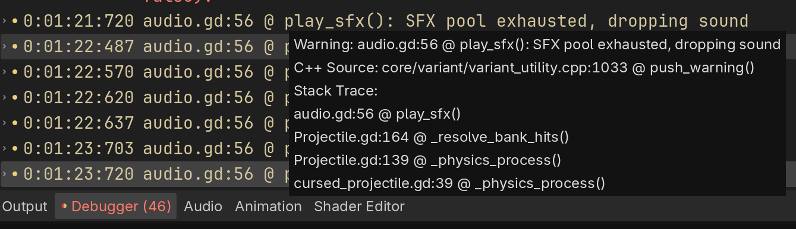
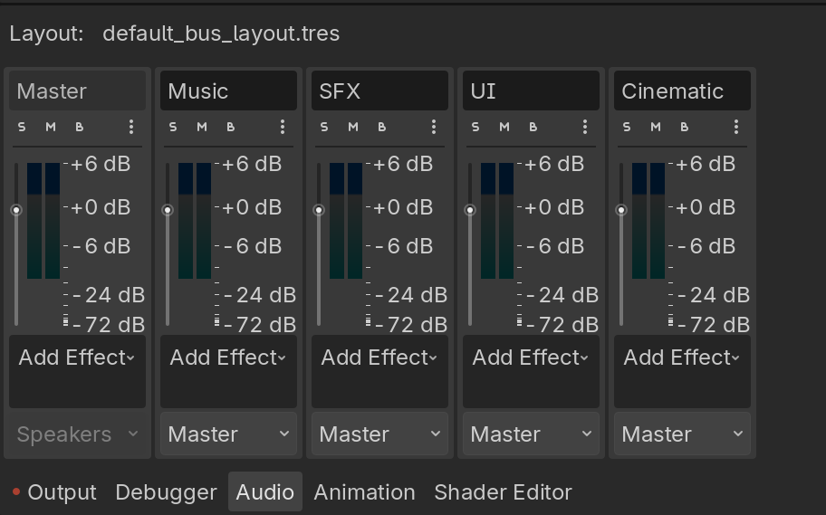
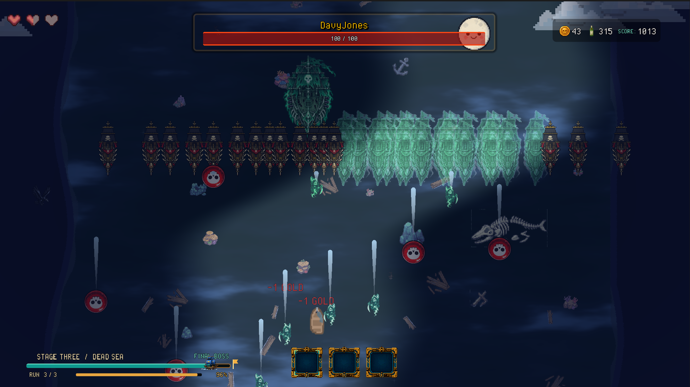

CASE STUDY · RMIT TEAM PROJECT
CASE STUDY · RMIT TEAM PROJECT
Flapjack
A top-down pirate shooter built in Godot by GGEZ Interactive, a student team. Our coordinator commended it as a creative take on the genre with rogue-like elements, and fun to play. I built its dialogue and audio systems, the parallax system, the night ghost-ship level and a bank painter.
- Main menu and tutorial
- Three stages, each with a boss, and a finale boss
- A small narrative with cutscenes and ending credits
- An in-level shop and an out-of-level ship upgrade station
The game
You captain a navy ship. After the tutorial, Blackbeard drives you back to the empire's port at the end of stage one, and the run begins again, roguelike style.
Gold buys upgrades mid-level. Gin, the meta-currency, buys permanent refits at the upgrade station. The story unfolds through picture cutscenes and in-game dialogue, and closes with ending credits.
Pooled audio player
Problem
During ideation, each sound was owned by the object that triggered it, so when the object was freed, its sound died with it. For example, a projectile calls queue_free() on impact, destroying its audio player mid-sound. I needed to decouple a sound's lifetime from its source, so I architected a pooled audio player.
Approach
I designed the audio system around three goals.
CentralisedA single Audio autoload owns all playback. It creates a pool of 32 voices at startup, and any script asks it for a free voice, so a sound outlives whatever fired it. If every voice is busy, the new sound is dropped rather than cutting one off.
Every sound routes through a bus under Master, so a new category is just a new bus. I started with SFX, Music and UI, then added a Cinematic bus for cutscenes without touching the rest.
Designer-friendlySounds, volume and pitch are exported variables, so my teammates could tune the mix in the Inspector. Every effect also gets a ±6% pitch shift, so repeated sounds don't get tiring.
Result
My teammates tuned the audio without needing me. When they didn't like a sound, they swapped it out, rebalanced the mix and adjusted the pitch themselves.
Considerations
Why 32 voices?Preliminary research suggested 32 voices is a common default budget, and it held for most of the game. Then came stage 3: the ghost ship boss summons waves of enemies, and if you don't defeat them fast enough, around 100 enemy ships can stay on screen, all firing at once. The pool hit its limit constantly, and new sounds were being culled.

play_sfx().On review, while writing this up, I noticed the pool drops new sounds when it's full. That avoids cutting sounds off mid-play, but it treats every sound equally, which is something to consider when the team polishes the game.
Through further research, I found three techniques that audio middleware uses to solve this, which I'd like to try implementing:
- Concurrency limits per sound, so a single sound like an explosion can't take over the pool.
- Priority and voice stealing, so important sounds replace the least important one playing.
- Virtual voices, so distant or quiet sounds are tracked but not played until they matter.

# Simultaneous sound effects.
const SFX_VOICES := 32
var _sfx_pool: Array[AudioStreamPlayer] = []
func _ready() -> void:
process_mode = Node.PROCESS_MODE_ALWAYS
for i in SFX_VOICES:
var p := AudioStreamPlayer.new()
p.bus = "SFX"
add_child(p)
_sfx_pool.append(p)# pitch spread float value gives a variance of +- x percent.
func play_sfx(stream: AudioStream, volume_db := 0.0, pitch_spread := 0.06, base_pitch := 1.0) -> void:
if stream == null:
return
var voice := _free_voice()
if voice == null:
push_warning("SFX pool exhausted, dropping sound")
return
voice.bus = "SFX"
voice.stream = stream
voice.volume_db = volume_db
voice.pitch_scale = base_pitch + randf_range(-pitch_spread, pitch_spread)
voice.play()
func _free_voice() -> AudioStreamPlayer:
for p in _sfx_pool:
if not p.playing:
return p
return null# UI sounds bypass the SFX bus so a gameplay volume slider does not silence
# the menus the player is using to adjust it.
func play_ui(stream: AudioStream, volume_db := 0.0) -> void:
if stream == null:
return
var voice := _free_voice()
if voice == null:
return
voice.bus = "UI"
voice.stream = stream
voice.volume_db = volume_db
voice.pitch_scale = 1.0
voice.play()
# Cutscene audio. Bypasses the Music and SFX buses so the cutscene fade,
# which ducks those two, does not silence the cutscene itself.
func play_cinematic(stream: AudioStream, volume_db := 0.0) -> void:
...
free_voice.bus = "Cinematic"# Freezes gameplay audio without touching UI or Cinematic voices, which must
# keep playing while the tree is paused. Called by CutsceneManager.
func set_world_paused(is_paused: bool) -> void:
_music_a.stream_paused = is_paused
_music_b.stream_paused = is_paused
for p: AudioStreamPlayer in _sfx_pool:
if p.bus == "SFX":
p.stream_paused = is_paused# Two music players so one can fade in while the other fades out.
func play_music(stream: AudioStream, volume_db := 0.0, fade_time := 1.5) -> void:
if stream == null:
return
if _music_active.stream == stream and _music_active.playing:
return
_force_loop(stream)
var incoming := _music_b if _music_active == _music_a else _music_a
var outgoing := _music_active
incoming.stream = stream
incoming.volume_db = -60.0
incoming.play()
var t := create_tween()
t.set_parallel(true)
t.tween_property(incoming, "volume_db", volume_db, fade_time)
t.tween_property(outgoing, "volume_db", -60.0, fade_time)
t.set_parallel(false)
t.tween_callback(outgoing.stop)
_music_active = incoming
Inspired by the cursed, undead crews of Pirates of the Caribbean. Moonlight turns ships ethereal and unkillable, and their shots steal gold instead of dealing damage. Davy Jones summons waves of ships, producing more sounds than the 32-voice SFX pool can play.
Layered weapon audio
Problem
As the player upgrades their cannon, the shot should sound more powerful, but recording a whole new sound for every combination of upgrades doesn't scale.
Approach
Every shot plays the base cannon sound, and each upgrade adds its own accent sound on top, such as a plasma layer. The upgrades stack, so the cannon's sound grows with the player's build.
Result
#TODO
Dialogue system
Problem
The cinematic, tutorial and boss encounters all needed lines of dialogue, written by people who shouldn't have to edit scripts or animation timelines to change a line.
Approach
Each line is its own data asset that follows a fixed schema, and lines are sequenced separately from animation. Writers can add or reorder lines without breaking the animations, and animators can change timing without breaking the dialogue.
Result
#TODO
What I learned
#TODO
Links
#TODO